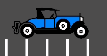

Fixing jitter, stutter and input lag
What is jitter, stutter and input lag?
Jitter and stutter are two different alterations to visible motion of objects on screen that may affect a game, even when running at full speed. These effects are mostly visible in games where the world moves at a constant speed in a fixed direction, like runners or platformers.
Input lag is unrelated to jitter and stutter, but is sometimes discussed alongside. Input lag refers to visible on-screen delay when performing actions with the mouse, keyboard, controller or touchscreen. It can be related to game code, engine code or external factors (such as hardware). Input lag is most noticeable in games that use the mouse to aim, such as first-person games. Input lag can't be completely eliminated, but it can be reduced in several ways.
Distinguishing between jitter and stutter
A game running at a normal framerate without exhibiting any effect will appear smooth:

A game exhibiting jitter will shake constantly in a very subtle way:

Finally, a game exhibiting stutter will appear smooth, but appear to stop or roll back a frame every few seconds:

Jitter
There can be many causes of jitter. The most typical one happens when the game physics frequency (usually 60 Hz) runs at a different resolution than the monitor refresh rate. Check whether your monitor refresh rate is different from 60 Hz.
Sometimes, only some objects appear to jitter (character or background). This happens when they are processed in different time sources (one is processed in the physics step while another is processed in the idle step).
This cause of jitter can be alleviated by enabling physics interpolation in the Project Settings. Physics interpolation will smooth out physics updates by interpolating the transforms of physics objects between physics frames. This way, the visual representation of physics objects will always look smooth no matter the framerate and physics tick rate.
Enabling physics interpolation has some caveats you should be aware of. For example, care should be taken when teleporting objects so that they don't visibly interpolate between the old position and new position when it's not intended. See the Physics Interpolation documentation for details.
Note
Enabling physics interpolation will increase input lag for behavior that depends on the physics tick, such as player movement. In most games, this is generally preferable to jitter, but consider this carefully for games that operate on a fixed framerate (like fighting or rhythm games). This increase in input lag can be compensated by increasing the physics tick rate as described in the Input lag section.
Stutter
Stutter may happen due to several different reasons. One reason is the game not being able to keep full framerate performance due to a CPU or GPU bottleneck. Solving this is game-specific and will require optimization.
Another common reason for stuttering is shader compilation stutter. This occurs when a shader needs to be compiled when a new material or particle effect is spawned for the first time in a game. This kind of stuttering generally only happens on the first playthrough, or after a graphics driver update when the shader cache is invalidated.
Since Godot 4.4, when using the Forward+ or Mobile renderers, the engine tries to avoid shader compilation stutter using an ubershader approach. For this approach to be most effective, care must be taken when designing scenes and resources so that Godot can gather as much information as possible when the scene/resource is loaded, as opposed as to when it's being drawn for the first time. See Reducing stutter from shader (pipeline) compilations for more information.
However, when using the Compatibility renderer, it is not possible to use this ubershader approach due to technical limitations in OpenGL. Therefore, to avoid shader compilation stutter in the Compatibility renderer, you need to spawn every mesh and visual effect in front of the camera for a single frame when the level is loading. This will ensure the shader is compiled when the level is loaded, as opposed to occurring during gameplay. This can be done behind solid 2D UI (such as a fullscreen ColorRect node) so that it's not visible to the player.
Note
On platforms that support disabling V-Sync, stuttering can be made less noticeable by disabling V-Sync in the project settings. This will however cause tearing to appear, especially on monitors with low refresh rates. If your monitor supports it, consider enabling variable refresh rate (G-Sync/FreeSync) while leaving V-Sync enabled. This allows mitigating some forms of stuttering without introducing tearing. However, it will not help with large stutters, such as the ones caused by shader compilation stutter.
Forcing your graphics card to use the maximum performance profile can also help reduce stuttering, at the cost of increased GPU power draw.
Additionally, stutter may be induced by the underlying operating system. Here is some information regarding stutter on different OSes:
Windows
Windows is known to cause stutter in windowed games. This mostly depends on the hardware installed, drivers version and processes running in parallel (e.g. having many browser tabs open may cause stutter in a running game). To avoid this, Godot raises the game priority to "Above Normal". This helps considerably, but may not completely eliminate stutter.
Eliminating this completely requires giving your game full privileges to become "Time Critical", which is not advised. Some games may do it, but it is advised to learn to live with this problem, as it is common for Windows games and most users won't play games windowed (games that are played in a window, e.g. puzzle games, will usually not exhibit this problem anyway).
For fullscreen, Windows gives special priority to the game so stutter is no longer visible and very rare. This is how most games are played.
When using a mouse with a polling rate of 1,000 Hz or more, consider using a fully up-to-date Windows 11 installation which comes with fixes related to high CPU utilization with high polling rate mice. These fixes are not available in Windows 10 and older versions.
Tip
Games should use the Exclusive Fullscreen window mode, as opposed to Fullscreen which is designed to prevent Windows from automatically treating the window as if it was exclusive fullscreen.
Fullscreen is meant to be used by GUI applications that want to use per-pixel transparency without a risk of having it disabled by the OS. It achieves this by leaving a 1-pixel line at the bottom of the screen. By contrast, Exclusive Fullscreen uses the actual screen size and allows Windows to reduce jitter and input lag for fullscreen games.
Linux
Stutter may be visible on desktop Linux, but this is usually associated with different video drivers and compositors. Some compositors may also trigger this problem (e.g. KWin), so it is advised to try using a different one to rule it out as the cause. Some window managers such as KWin and Xfwm allow you to manually disable compositing, which can improve performance (at the cost of tearing).
There is no workaround for driver or compositor stuttering, other than reporting it as an issue to the driver or compositor developers. Stutter may be more present when playing in windowed mode as opposed to fullscreen, even with compositing disabled.
Feral GameMode can be used to automatically apply optimizations (such as forcing the GPU performance profile) when running specific processes.
macOS
Generally, macOS is stutter-free, although recently some bugs were reported when running on fullscreen (this is a macOS bug). If you have a machine exhibiting this behavior, please let us know.
Android
Generally, Android is stutter and jitter-free because the running activity gets all the priority. That said, there may be problematic devices (older Kindle Fire is known to be one). If you see this problem on Android, please let us know.
iOS
iOS devices are generally stutter-free, but older devices running newer versions of the operating system may exhibit problems. This is generally unavoidable.
Input lag
Project configuration
On platforms that support disabling V-Sync, input lag can be made less noticeable by disabling V-Sync in the project settings. This will however cause tearing to appear, especially on monitors with low refresh rates. It's suggested to make V-Sync available as an option for players to toggle.
When using the Forward+ or Mobile rendering methods, another way to reduce
visual latency when V-Sync is enabled is to use double-buffered V-Sync instead
of the default triple-buffered V-Sync. Since Godot 4.3, this can be achieved by
reducing the Display > Window > V-Sync > Swapchain Image Count project
setting to 2. The downside of using double buffering is that framerate will
be less stable if the display refresh rate can't be reached due to a CPU or GPU
bottleneck. For instance, on a 60 Hz display, if the framerate would normally
drop to 55 FPS during gameplay with triple buffering, it will have to drop down
to 30 FPS momentarily with double buffering (and then go back to 60 FPS when
possible). As a result, double-buffered V-Sync is only recommended if you can
consistently reach the display refresh rate on the target hardware.
Increasing the number of physics iterations per second can also reduce
physics-induced input latency. This is especially noticeable when using physics
interpolation (which improves smoothness but increases latency). To do so, set
Physics > Common > Physics Ticks Per Second to a value higher than the
default 60, or set Engine.physics_ticks_per_second at runtime in a
script. Values that are a multiple of the monitor refresh rate (typically
60) work best when physics interpolation is disabled, as they will avoid
jitter. This means values such as 120, 180 and 240 are good starting
points. As a bonus, higher physics FPSes make tunneling and physics instability
issues less likely to occur.
The downside of increasing physics FPS is that CPU usage will increase, which
can lead to performance bottlenecks in games that have heavy physics simulation
code. This can be alleviated by increasing physics FPS only in situations where
low latency is critical, or by letting players adjust physics FPS to match their
hardware. However, different physics FPS will lead to different outcomes in
physics simulation, even when delta is consistently used in your game logic.
This can give certain players an advantage over others. Therefore, allowing the
player to change the physics FPS themselves should be avoided for competitive
multiplayer games.
Lastly, you can disable input buffering on a per-rendered frame basis by calling
Input.set_use_accumulated_input(false) in a script. This will make it so the
_input() and _unhandled_input() functions in your scripts are called on
every input, rather than accumulating inputs and waiting for a frame to be
rendered. Disabling input accumulation will increase CPU usage, so it should be
done with caution.
Tip
On any Godot project, you can use the --disable-vsync
command line argument to forcibly disable V-Sync.
Since Godot 4.2, --max-fps <fps> can also be used to set an FPS limit
(0 is unlimited). These arguments can be used at the same time.
Hardware/OS-specific
If your monitor supports it, consider enabling variable refresh rate (G-Sync/FreeSync) while leaving V-Sync enabled, then cap the framerate in the project settings to a slightly lower value than your monitor's maximum refresh rate as per this page.
This may be counterintuitive at first, but capping the FPS below the maximum refresh rate range ensures that the OS never has to wait for vertical blanking to finish. This leads to similar input lag as V-Sync disabled with the same framerate cap (usually less than 1 ms greater), but without any tearing.
The formula used to determine the framerate cap is refresh - (refresh * refresh / 3600.0)
where refresh is the monitor's refresh rate in Hz.
This table shows the framerate cap to use for common refresh rates
(the cap is rounded down to the nearest integer):
Refresh rate |
Framerate cap |
|---|---|
60 Hz |
58 FPS |
75 Hz |
73 FPS |
120 Hz |
115 FPS |
144 Hz |
138 FPS |
165 Hz |
157 FPS |
240 Hz |
224 FPS |
360 Hz |
324 FPS |
480 Hz |
416 FPS |
This framerate cap can be set by changing the Application > Run > Max FPS
project setting or assigning Engine.max_fps at runtime in a script. At
higher refresh rates, a lower cap is needed to ensure timing inaccuracies don't
cause the display to engage V-Sync (which would increase input lag).
On some platforms, you can also opt into a low-latency mode in the graphics driver options (such as the NVIDIA Control Panel on Windows). The Ultra setting will give you the lowest possible latency, at the cost of slightly lower average framerates. Forcing the GPU to use the maximum performance profile can also further reduce input lag, at the cost of higher power consumption (and resulting heat/fan noise).
Finally, make sure your monitor is running at its highest possible refresh rate in the OS' display settings.
Also, ensure that your mouse is configured to use its highest polling rate (typically 1,000 Hz for gaming mice, sometimes more). High USB polling rates can however result in high CPU usage, so 500 Hz may be a safer bet on low-end CPUs. If your mouse offers multiple DPI settings, consider also using the highest possible setting and reducing in-game sensitivity to reduce mouse latency.
On Linux when using X11, disabling compositing in window managers that allow it (such as KWin or Xfwm) can reduce input lag significantly.
Reporting jitter, stutter or input lag problems
If you are reporting a stutter or jitter problem (opening an issue) not caused by any of the above reasons, please specify very clearly all the information possible about device, operating system, driver versions, etc. This may help to better troubleshoot it.
If you are reporting input lag problems, please include a capture made with a high speed camera (such as your phone's slow motion video mode). The capture must have both the screen and the input device visible so that the number of frames between an input and the on-screen result can be counted. Also, make sure to mention your monitor's refresh rate and your input device's polling rate (especially for mice).
Also, make sure to use the correct term (jitter, stutter, input lag) based on the exhibited behavior. This will help understand your issue much faster. Provide a project that can be used to reproduce the issue, and if possible, include a screen capture demonstrating the bug.